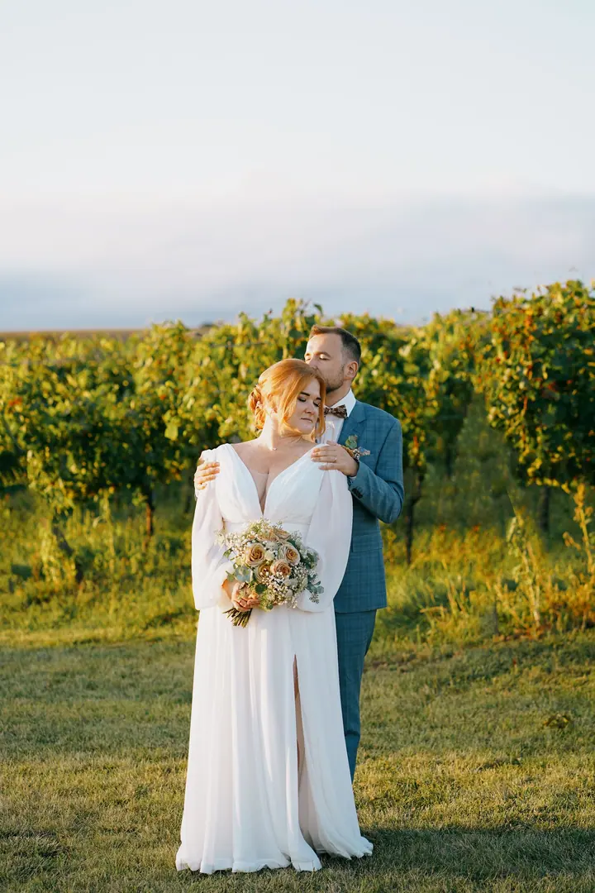
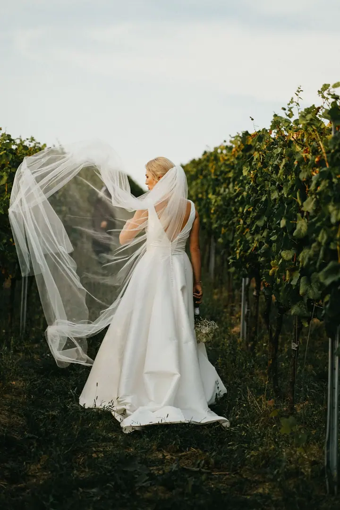
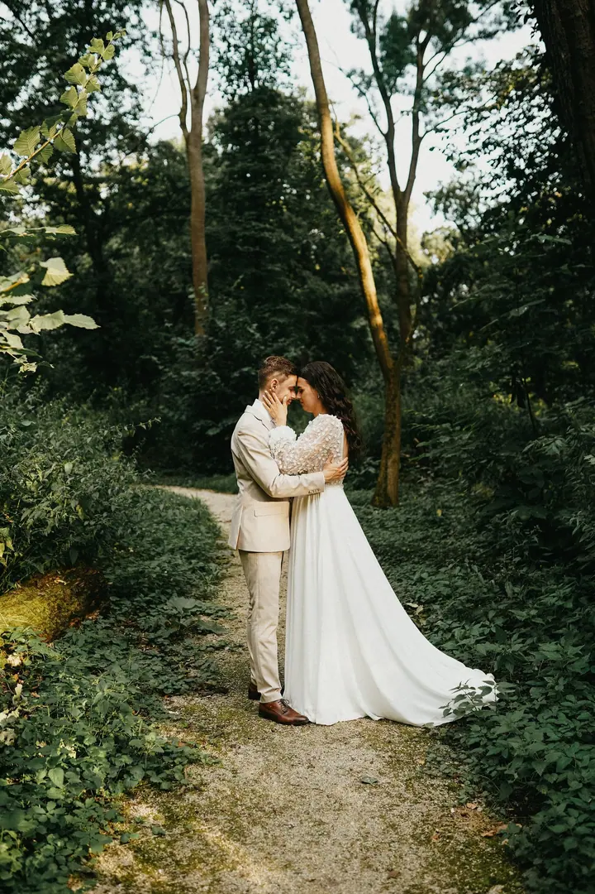

jedna
Svatební focení
Celý svatební den, ze kterého dostanete 400–600 upravených fotografií a webovou galerii, kterou snadno nasdílíte svatebčanům. Na přání přidám předsvatební párové focení nebo vám půjčím polaroidové fotoaparáty.

Svatební, rodinný a produktový fotograf · Uherské Hradiště, jižní Morava, po domluvě i zahraničí

Jmenuji se Jan Ryšavý a jsem fotograf z Uherského Hradiště. Fotím hlavně svatby, páry a rodiny po celé jižní Moravě, ale rád za vámi přijedu kamkoliv. Se svou manželkou Aničkou a naší fenkou Polly se snažíme vyždímat ze života, co to jde.
Více o mně
Co fotím
jedna
Celý svatební den, ze kterého dostanete 400–600 upravených fotografií a webovou galerii, kterou snadno nasdílíte svatebčanům. Na přání přidám předsvatební párové focení nebo vám půjčím polaroidové fotoaparáty.
dvě
Společné focení ve dvou nebo ve třech, venku a v klidu. Dostanete 60+ upravených fotografií ve webové galerii ke stažení i sdílení.
Rodinný portrét pro mě není jen o postavení před fotoaparát, ale o spojení a radosti, kterou spolu sdílíte. Dostanete 60+ upravených fotografií.
Moodové, kampaňové a lifestyle fotografie pro značky, sociální sítě nebo web. Projdeme spolu vaše představy a připravím nabídku na míru.
Každý pár je pro mě jedinečný
Za objektivem
Jmenuji se Jan Ryšavý a pocházím z Uherského Hradiště. Doma mám manželku Aničku a fenku Polly a všichni tři se snažíme vyždímat ze života, co to jde. Mým hlavním působištěm je jižní Morava, ale rád za vámi přijedu kamkoliv po republice a po domluvě i do zahraničí.
Nejvíc fotím svatby. Svatba pro mě znamená dojemné chvíle plné lásky, radosti a emocí. Každý pár je jiný a já se snažím, aby to bylo poznat na každé fotografii. Fotím mezi vinohrady, u řeky, v sadu i na městských schodech, prostě tam, kde to sedí právě vám.
Kromě svateb fotím rodiny, páry, těhotenství a miminka a čas od času si rád odskočím k produktům. I každý produkt má svůj příběh a já ho chci ukázat. Fotky vám na přání vytisknu na kvalitní italský papír Fedrigoni, aby nezůstaly jen v počítači.
Jan
Pošlete mi termín a místo svatby nebo focení. Rád zodpovím všechny vaše dotazy a pošlu kompletní ceník.
Projdeme spolu vaše představy a plán dne. Pokud chcete, můžeme se před svatbou poznat na párovém focení.
Jsem s vámi v klidu a bez spěchu, i když zrovna prší nebo se plány změní. Vy si užíváte den, já fotím.
Upravené fotografie dostanete ve webové galerii ke stažení i sdílení. Vybrané snímky vám můžu vytisknout na papír Fedrigoni.
Portfolio
Otázky
Cena záleží na vzdálenosti a délce focení. Celodenní svatba se obvykle pohybuje kolem 20 000 Kč, kompletní ceník vám rád pošlu.
Ze svatby dostanete 400–600 upravených fotografií podle délky focení, z párového, těhotenského nebo rodinného focení 60 a víc. Vše ve webové galerii.
Ano. Primárně fotím v rámci Česka, po domluvě kdekoliv v zahraničí.
Ano, portrétní focení jedné osoby stojí 3 500 Kč. Trvá zhruba 1–1,5 hodiny, předem dostanete tipy a rady a pak 35+ upravených fotografií.
Napište pár vět o tom, co si představujete. · +420 739 074 106